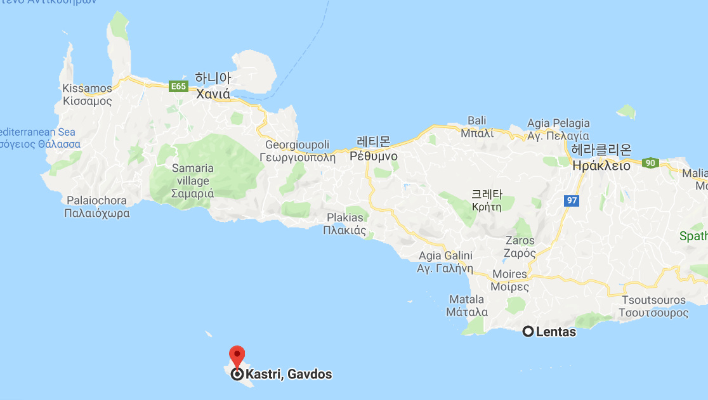
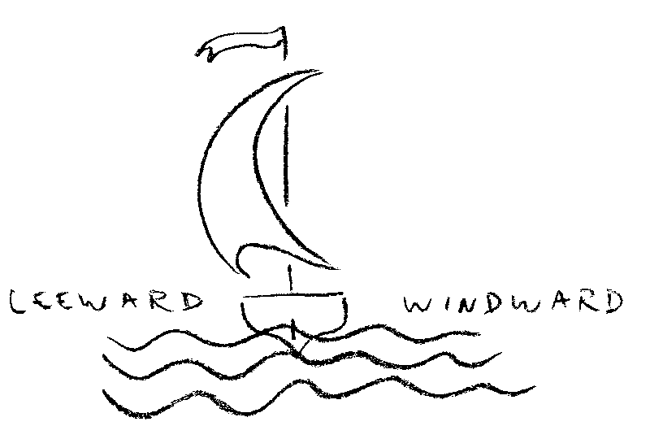
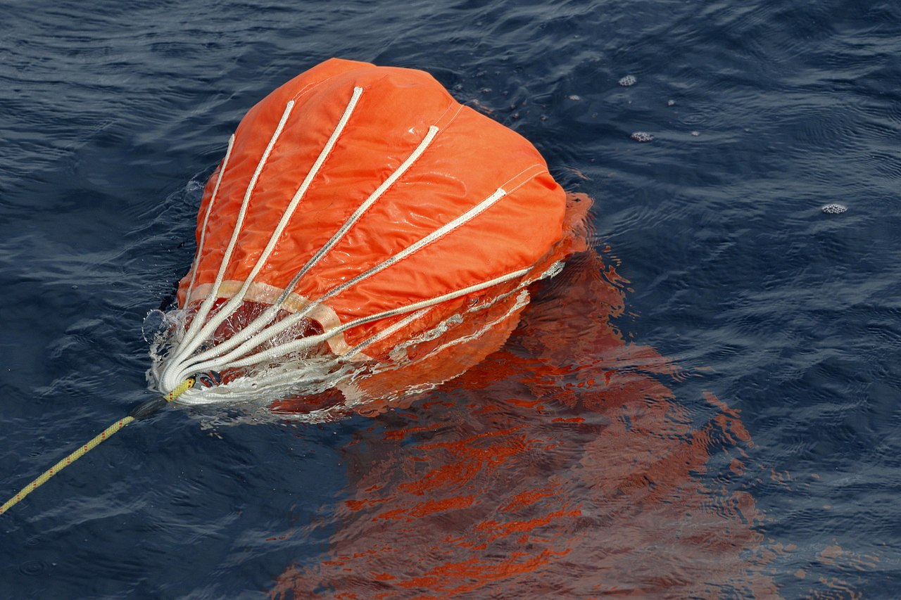
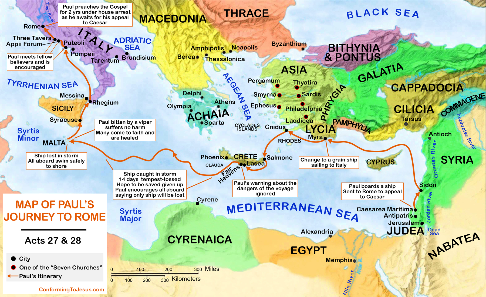
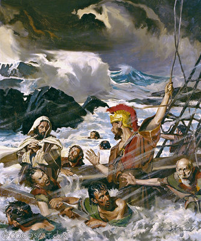

바울 난파기 - 사도행전 27장 흥미위주로 풀어 읽기 (하편)
게시: 2019-08-26T06:30:28+09:00
그렇게 선주 입장에서는 포에닉스로 가지 못하면 배와 화물이 파손될 수도 있는 상황에서 때마침 순한 남풍이 불어왔습니다. 당연히 화물선은 이때를 놓칠새라 당장 돛을 펴고 바다로 나섰습니다. 물론 이때도 먼 바다로는 감히 나서지 못하고 그냥 크레테 섬의 남해안을 따라 항해했습니다. 그러나 정말 바다와 사람의 마음은 한치를 알 수 없는 것이라더니, 포에닉스로 가는 그 짧은 거리를 가는 동안에 사단이 나고 맙니다. 당시 사람들이 에우로클리돈(유라굴로, Euraquilo, Euroclydon)이라는 이름으로 부르던 거센 북동풍이 불어닥친 것입니다. 그러자 배는 해안선에서 떨어져 나가 속절없이 남서쪽으로 떠내려 갈 수 밖에 없었습니다. 선원들은 역풍을 거스를 재주가 없었으므로 그냥 포기하고 배가 폭풍에 밀려 먼 바다로 표류하도록 내버려 두었습니다. (27:13 ~ 27:15)

(성경에 가우도스라고 표기된 섬의 위치입니다.)
바람이 거세어질 것 같으면 그때라도 재빨리 항로를 돌리든가 하면 되지 않았을까 라고들 생각하시겠지만 아마 당시 상황은 꽤 급박했던 모양입니다. 그 화물선에는 해안으로 짐을 옮기는 등의 목적으로 사용할 쪽배를 한척 고물에 밧줄로 묶어서 끌고 다녔던 모양인데, 이 쪽배를 끌어들여 갑판에 올려놓을 틈도 없었습니다. 하염없이 거센 바람에 떠밀려 표류하던 화물선이 간신히 한숨 돌릴 계기는 원래 목적지인 포에닉스로부터 남동쪽으로 약 80km 정도 떨어진 가우도스(Clauda, Cauda, Gavdos)라는 작은 섬 남쪽까지 떠내려온 다음에야 생겼습니다. 한글 성경에는 그냥 '작은 섬 남쪽까지 밀려왔을 때'라고만 되어 있지만 영어 성경에는 'As we passed to the lee of a small island called Cauda...'라고 되어 있습니다. Lee라는 단어는 항해 용어로서 '바람이 없는 곳' 또는 '바람이 불어가는 쪽'이라는 단어인데, 당시 북동풍이 거세게 불고 있었는데 섬의 남쪽에 배가 있다는 것은 뱃사람들에게 2가지 의미를 가집니다. 먼저, 최소한 배가 섬과 그 인근 암초로 떠밀려가서 부딪힐 일은 없다는 뜻이고, 또한 섬이 바람막이 역할을 해서 다소 바람이 약해진다는 뜻입니다. 원래 육지 근처에 배가 떠있는데 바람이 바다 쪽에서 육지 쪽으로 불어가는 것, 즉 배가 섬의 windward(우리 말로는 풍상) 쪽에 있는 것은 뱃사람들에게는 바람이 순풍일 경우에조차 매우 신경쓰이는 일이었거든요. 아무튼 이 가우도스 섬의 lee에 들어가서 파도가 다소라도 잔잔해진 다음에야 선원들은 이 쪽배를 끌어당겨 갑판 위에 올려놓고는 쪽배가 다시 바다에 떨어질까봐 밧줄로 단단히 동여맸습니다. (27:16)

그러나 그건 쪽배 하나를 구한 것일 뿐, 당장 화물선 자체는 여전히 매우 위험한 상황이었습니다. 선원들은 이대로 가다가는 시르티스(Syrtis, 오늘날 리비아의 벵가지(Benghazi)와 트리폴리(Tripoli) 사이 해안가에 있는 암초와 모래톱이 많은 얉은 해역)까지 떠밀려가서 모래톱에 좌초라도 할까 전전긍긍했습니다. 거센 바람 속에서 좌초할 경우 배가 산산조각날 수도 있기 때문이었습니다. 요즘 배들도 종종 모래톱에 좌초되는 일이 가끔 발생합니다만, 같은 모래톱에 좌초하더라도 배가 천천히 항진하다가 좌초되는 것과 전속력으로 달리다가 좌초되는 것은 굉장히 다른 결과를 낳았습니다. 나폴레옹 시대인 18~19세기의 범선들만 해도 약한 바람 속에서 서서히 나아가다 부드럽게 좌초되면 별 피해가 없었습니다. 심지어 배가 죄초된 건지 즉각 알아차리지 못하는 경우도 있었지요. ( https://nasica1.tistory.com/237 참조) 이런 경우는 그냥 노젓는 보트들을 내려서 배를 뒤로 잡아당겨 배를 다시 띄우면 문제가 해결되었습니다. 하지만 돛에 바람을 잔뜩 받으며 전속력으로 달리던 배가 갑자기 모래톱에 덜컥 걸리면 그 충격에 돛대가 부러지는 경우도 종종 있을 정도로 큰 충격이 있게 됩니다. 18~19세기의 떡갈나무로 단단하게 만든 전열함이 그럴 정도라면 1세기 경의 조그만 화물선 따위는 아마 산산조각이 났을 겁니다. 언제 모래톱이 나타날지 모르는 상황에서 선원들은 어떻게든 배의 속도를 줄여야 했습니다. 그런데 여기서 영문판 성경에는 꽤 전문적인 항해용어가 나옵니다. Sea anchor, 또는 drag anchor라는 단어가 나오더라고요. 한글판 성경에는 "그대로 가다가는 모래톱에 걸릴까 두려워 돛을 내리고 바람에 밀려 다녔다" "스르디스에 걸릴까 두려워 연장을 내리고 그냥 쫓겨가더니" 정도로 간단히 번역을 해놓았는데, 영문판 성경에도 lower sea anchor나 lower drag anchor 대신 그냥 lower the sails (돛을 내리다) 라고 써놓은 버전도 있는 것으로 보아 원문인 헬라어 버전도 한글판의 '연장'처럼 다소 애매모호하게 적은 모양입니다. 하긴 사도행전 원문을 적은 사람도 헬라어를 쓰던 유식한 유대인 의사 누가(Luke)라고 하니까 아마 뱃사람들의 용어나 전문 항해 용어를 정확히 적었을 것 같지는 않습니다. 아무튼 sea anchor, 또는 drag anchor라는 것은 도저히 닻을 내려 배를 고정시킬 상황은 아니자만 어떻게든 배의 속도를 줄이고 배를 안정시켜야 할 상황에서 내리는 일종의 브레이크 같은 도구입니다. 이건 닻이라기보다는 실제로는 일종의 물주머니 또는 낙하산처럼 생긴 물건인데, 배 뒤에 끌고 다니면 물에 저항을 일으켜 뭔가 큰 힘이 배를 뒤에서 끌어잡아당기는 것과 비슷한 상황을 만들어줍니다. 그러니까 당시의 화물선에도 이미 이와 비슷한 물건이 있었다는 이야기지요. (27:17)

(Sea anchor 또는 drag anchor라는 것은 이렇게 일종의 브레이크 역할을 해주는 물건입니다.) 그러나 시련은 여기서 끝나지 않았습니다. 그 다음날도 폭풍이 계속되는 가운데 드디어 선체에 물이 새기 시작했던 모양입니다. 당시 배들은 목재를 이어 만든 것이라서 당연히 물이 샜습니다. 목판과 목판 사이는 삼베 등의 섬유류 찌꺼기를 망치와 끌로 박아넣어 메웠는데, 이 정도의 방수 처리로는 평상시에도 물이 조금씩 샜지만 특히 파도가 거세어 선체에 무리가 가면 물이 콸콸 샜거든요. 선창에 물이 차면 배가 더 무거워지므로 침수가 점점 기하급수적으로 심해집니다. 그래서 선원들은 드디어 화물을 바다에 버리기 시작했습니다. 하지만 그 다음날도 폭풍이 계속 되자, 이젠 당장 불필요한 배의 장비들(tackle and rigging)까지도 내다버렸습니다. 구체적으로 어떤 장비를 버렸는지는 나오지 않습니다만, 아마 돛의 가로 활대, 도르레, 예비 돛과 밧줄 등이 아니었을까 합니다. (27:18~27:19) 게다가 더 큰 일이 있었습니다. 바로 자신들이 어디쯤까지 떠밀려왔는지 현재 위치를 알 길이 전혀 없었던 것입니다. 벌써 며칠 동안이나 해와 별을 보지 못했기 때문이었지요. 당시엔 시계는 커녕 아직 나침반이나 육분의 등의 위치 계산을 위한 진보된 장치들이 없었습니다. (시계와 육분위를 이용한 위도경도 계산에 대해서는 https://nasica1.tistory.com/118 참조) 그래도 대략 달력과 해의 높이, 별의 위치를 보면 대충이라도 배의 위치를 알 수 있었는데 먹구름 때문에 해와 별을 못 보니 이곳이 크레테 섬 남쪽인지 시칠리아 섬 남쪽인지 혹은 아예 리비아 해안가인지 알 방법이 없었습니다. 바다에서 길을 잃는다는 것은 정말 무서운 일이었습니다. 선원들은 이제 살 가망이 없다고 절망하게 되었습니다. (27:20) 이때 다시 당대의 오지라퍼이자 투머취토커인 바울이 일어났습니다. 그는 먼저 '내 말대로 했으면 이런 피해를 입지 않았을터인데 ㅉㅉ ㅋㅋㅋ' 라고 운을 뗐습니다. 저 개인적으로는 이때 로마군이나 선원들에게 바울이 맞아죽지 않은 것이 정말 신의 돌보심 때문이 아니었을까 생각합니다. 그는 자신이 섬기는 하나님의 천사가 어젯밤 내 곁에 서서 '너는 로마에 가서 케사르 앞에 서야 하므로 여기서 죽지 않는다, 그리고 너와 항해하는 사람들도 모두 너에게 주셨다, 그러므로 사람은 하나도 죽지 않고 배만 부서질 것이다, 우린 어느 섬에 가서 닿을 것'이라고 주장했습니다. 이때 또 맞아죽지 않은 것은 정말 신의 기적이라고 할 수도 있겠습니다만, 당시 지중해 사람들은 이런저런 다양한 세계의 신들을 많이 접하고 있었으므로 신박한 이야기를 하는 예언자들이 그리 낯선 존재는 아니었습니다. 또 최소한 모두가 살 수 있다는 신의 계시를 받았으니 '이 배의 모든 사람들은 이제 너의 것'이라는 소리만 애써 못들은 척 하면 꽤 기분 좋은 예언이었지요. (27:21~27:26)
그러나 그 뒤로도 10일간 더 시련이 계속 되었습니다. 14일째 되던 날 밤에도 이들은 이탈리아와 그리스 사이의 바다인 아드리아 해를 표류하고 있었는데, 이때 뭘 보고 그렇게 생각했는지 몰라도 선원들은 육지가 근처에 있다는 것을 알아챘습니다. 그럴 때 당장 해야 할 일은 수심을 재는 것입니다. (음향 수심 측정기가 없던 시절의 수심 측정에 대해서는 https://nasica1.tistory.com/284 참조) 수심을 재어보니(took soundings) 약 120 피트(37m)가 나왔는데, 조금 후 다시 재어보니 90 피트(28m)가 나왔습니다. 즉 육지 쪽으로 빠르게 접근하고 있다는 이야기였지요. 육지 인근에는 암초나 모래톱이 있을 가능성이 높았고, 까딱 하다가는 그런 곳에 부딪히 배가 산산조각날 가능성이 많았습니다. 선원들은 즉각 고물 쪽으로 닻을 4개나 던져 일단 배를 멈춰 세웠습니다. 날이 밝아야 육지가 어디쯤에 있는지 볼 수 있으므로 일단 새벽이 될 때까지는 정지해있는 것이 안전하다고 판단했기 때문입니다. (27:28~27:29) 그런데 이때 왜 이물 쪽에는 닻을 던지지 않았느냐고 물으시는 분들이 있을 것 같습니다. 실은 일부 선원들이 이물 쪽에서도 닻을 던지려 하면서 갑판 위에 있던 쪽배를 슬그머니 바다에 내렸습니다. 그런데 이들을 날카로운 눈으로 감시하던 이가 있었으니 그 배의 오지라퍼 바울이었습니다. 그가 보기에 이 선원들은 닻을 내리려는 것이 아니라 자기들끼리 쪽배를 타고 육지로 달아나려는 것이었습니다. 제게는 이 부분이 약간 이해가 가지 않습니다. 파도가 거세게 몰아치는 그 캄캄한 어둠 속에서 쪽배를 타고 육지로 향한다는 것은 굉장히 위험해 보이는 일이거든요. 제가 선원이라면 일단 그냥 날이 밝을 때까지 기다리는 것이 훨씬 더 안전하다고 생각할 것 같습니다. 그런데 아무튼 바울의 눈에 그들은 배신자들이었습니다. 바울은 곧장 로마군에게 선원들의 행동을 고자질했습니다. "저것들이 자기들끼리만 살려고 쪽배를 타고 도망치려 합니다. 저것들이 없으면 배를 몰 사람이 없으므로 우리 모두 물에 빠져 죽습니다 !" 그 신고를 받은 로마군들은 선원들을 제압하고는 그 쪽배와 연결된 밧줄을 끊어 떠내려가게 내버려 두었습니다. 아마 이때 선원들의 심정은 바울을 정말 찢어죽이고 싶었을 것 같습니다. (27:30~32)

날이 밝을 때 즈음 바울은 또 나섰습니다. 벌써 14일쨰 다들 아무 것도 먹지 못해서 힘이 없는데, 이제 살아남으려면 다들 음식을 들라고 권하며 스스로도 빵을 손에 들고 하나님께 기도를 드린 뒤 쪼개어 먹었습니다. 이 부분에 대해서는 저도 뭐라고 설명을 해야 할지 모르겠군요. 아무리 폭풍이 불어닥친다고 해도 왜 선원들 뿐만 아니라 승객들조차도 다들 아무 것도 안 먹고 쫄쫄 굶었는지에 대해서 설명이 없습니다. 당시 항해가 굉장히 긴 것도 아니었으므로 배에는 신선한 빵과 포도주가 아직 충분히 남아 있었을 것이거든요. 가능한 설명은 2가지입니다. 하나는 폭풍이 거세어 승객들이 뱃멀미 때문에 아무 것도 먹지 못했을 거라는 것입니다. 두번째 설명은 좀 더 복잡합니다. 그리스-로마 시대의 3단노선의 경우엔 배 위에서 식사를 하는 경우가 많지 않았습니다. 좁은 배에 워낙 많은 사람들이 타고 있었으므로 배에서는 취사를 하고 식사를 할 공간이 아예 없었습니다. 그래서 점심이든 저녁이든 식사를 하려면 배를 해안가에 끌어올리고 그 옆에서 불을 피우고 식사 준비를 했습니다. 하지만 이건 3단노선이 아니라 돛으로 운항하는 화물선이었습니다. 아무튼 선상에 화덕을 갖추고 고기를 삶을 정도는 아니더라도 빵과 포도주 정도의 간단한 식사는 얼마든지 가능했을 것입니다. 제 생각으로는 아마도 하루짜리 항해를 생각하고 빵을 넉넉히 싣지 않고 출항했다가 배가 폭풍에 떠내려가는 상황이 되자 얼마나 표류할지 알 수 없었으므로 선주나 키잡이가 '나중에 비상식량으로 먹을 수 있도록 빵을 먹지 말고 아껴두라'고 명령을 내렸을지도 모르겠습니다. 일부 성경 학자들은 바울이 파선을 앞두고 빵을 쪼개어 먹은 이 행위를 일종의 성찬식(eucharist)이라고 해석하기도 합니다만, 그건 여기서는 패스하겠습니다.
또 약간 의아한 점은, 37절에야 비로소 이 배에 탑승한 인원의 수가 밝혀지는데 그 수가 무려 276명입니다. 이 정도 인원수는 19세기 초의 영국 해군 제5급 프리깃함, 즉 1000톤 급의 상당히 큰 군함에서나 가능한 인원수입니다. 그나마 원래 군함은 전투원과 예비 승조원 등 화물선에 비해 굉장히 많은 수의 인원을 태웠기 때문에 300명 가까이 태웠던 것이고, 민간 화물선의 선원 수는 훨씬 적었습니다. 훨씬 크기가 작은 로마 시대의 500톤급 화물선에 그렇게 많은 선원이 필요할 리는 없고, 또 설령 백인대장 휘하 병사 수가 정말 100명 꽉 채워서 다 있었다고 해도 너무 많은 인원수입니다. 아마도 이 화물선에는 로마군 이외의 승객들도 꽤 많이 태웠었나 봅니다. 하지만 그것도 설명이 안 되는 것이, 걸어서 가도 되는 거리인 '아름다운 항구'에서 포에닉스로의 여행을 굳이 위험한 바닷길로 가고자 하는 승객이 100명이나 된다는 것은 매우 이상한 일입니다. 일부 헬라어 원전에서는 이 수를 69명 또는 70명이라고 기록한 것도 있는 모양이던데, 사실 이 숫자가 더 말이 되는 숫자이긴 합니다. 아무튼 대부분의 누가복음 원전에서는 276명으로 나옵니다. (27:33~27:38) 자, 이제 빵까지 먹은 이들의 눈 앞에 드디어 날이 샙니다. 이들의 운명은 과연 어떻게 펼쳐질까요 ? 저는 뭐 더 재미있게 쓸 이야기가 없으므로 그 결말이 궁금하신 분들은 신약성경 사도행전 27장 38절부터 44절까지 직접 읽어보시기 바랍니다. 저는 여기서 끝~!

Source : https://www.simplybible.com/dmaps.htm https://graceofourlord.com/tag/mysia/ https://www.conformingtojesus.com/charts-maps/en/paul%27s_journey_to_rome_map.htm https://www.jw.org/en/publications/books/bearing-thorough-witness/preaching/paul-shipwreck/ https://www.jw.org/en/publications/magazines/watchtower-no5-2017-september/did-you-know/ https://www2.rgzm.de/navis/Themes/Commercio/CommerceEnglish.htm https://en.wikipedia.org/wiki/Rating_system_of_the_Royal_Navy https://en.wikipedia.org/wiki/Sea_anchor http://bibleencyclopedia.com/goodsalt/Acts_27_Paul%27s_Shipwreck.htm https://www.biblegateway.com/passage/?search=Acts+27&version=TPT